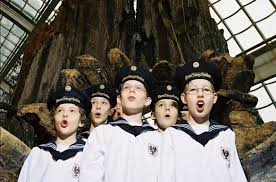
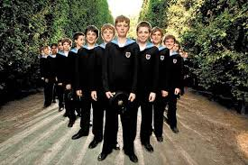
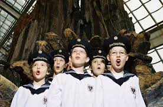
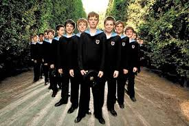

Pensaba que debería hablar o complementar algo importante de los arquitectos, pero tienes curiosidad sobre las presentaciones artísticas. Como bien dices, fueron de muy buena calidad y muchas de carácter internacional. Destacaría, luego de Pavarotti, a Los Niños Cantores de Viena que logramos que vinieran a Concepción, por primera vez, el 8 de julio de 1996.
Cuando cerramos el contrato y anunciamos por la prensa de radio, diario y televisión, que la presentación sería en el Teatro Concepción y que las entradas estarían a la venta en su boletería, ocurrió que a media tarde de ese mismo día, se había vendido la totalidad de ellas. Incluso, como en el directorio nunca tuvimos entradas preferentes, ni gratuitas, sucedió que cinco directores se quedaron sin entradas por no haberlas comprado de inmediato. Lamentablemente, tampoco pudimos grabar un video de la función, porque era una condición impuesta por el contrato.
El espectáculo superó todas las expectativas. Y no era para menos. Interpretaron piezas de Mendelsohn, Gallus, Stangelberg, Schubert, Kodaly, Copland y de la ópera cómica By Royald Command de Richard Rossmayer. Fue increíble. Es que era y es un coro como no hay otro. Nacieron en 1489, gracias al Emperador Maximiliano I, con el nombre simple de Coro Cantores. Originalmente, eran seis niños que debían cantar diariamente en la Capilla del Palacio Imperial y, ocasionalmente, en banquetes de la Corte. Pronto adquirieron renombre y cantaron en muchos acontecimientos históricos. Dentro de los integrantes más famosos del Coro estuvieron Hayden, Schubert, Hans Richter y Félix Montti. Durante siglos, casi todos los músicos importantes compusieron, dirigieron y tocaron para él. En 1924, el Coro Cantores pasó a llamarse Los Niños Cantores de Viena. Actualmente, existen cuatro coros de 24 niños cada uno. Uno de esos es el que estuvo en Concepción.
Y a la pregunta cuánto nos costó: Nada. Todas las presentaciones, como la primera de Pavarotti, fueron fruto de la gestión de nuestra corporación y su costo se pagó con el valor de las entradas. En el caso de Los Niños Cantores de Viena, quedó un excedente de más o menos cuatro millones de pesos que sirvieron para presentaciones gratuitas que también hicimos.
 


